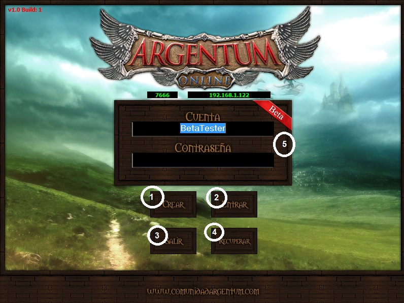
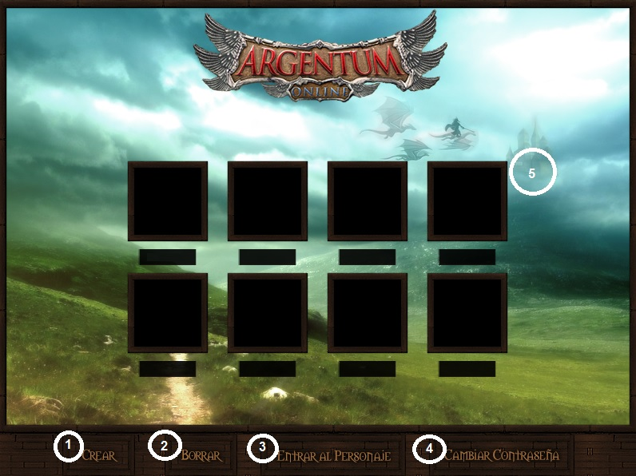
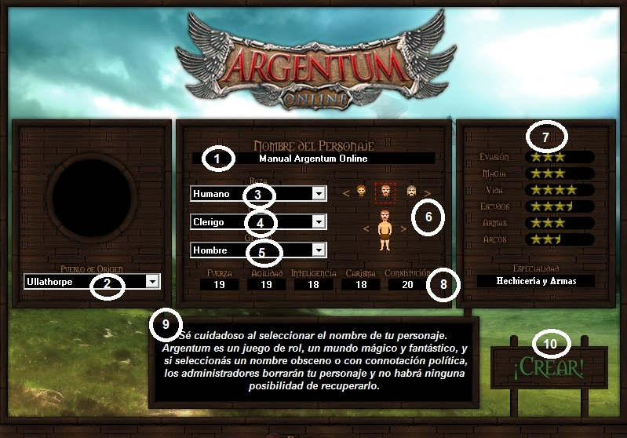
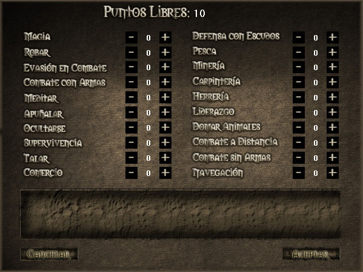

Sistema de Cuentas
El usuario tendrá una única cuenta asociada a un correo electrónico. Al iniciar sesión puede ver los personajes que posee con una imagen de cómo se encuentra su personaje (vivo, muerto, ítems equipados).
Al momento de crear una cuenta, se te pide que ingreses un correo válido (es 100% necesario que sea válido ya que deberás activar la cuenta). También se te pedirá una clave (PIN), la cual no se podrá recuperar por mail ni por otro medio. Es importante que recuerdes el PIN ya que servirá para gestiones de seguridad de tu cuenta, para poner un personaje a la venta, entre otras cosas.
Al crear la cuenta, se te envía un correo electrónico con un enlace para poder validar la cuenta.
Una vez clickeado el link, van a poder entrar con la cuenta de juego sin problema y crear sus personajes.
Cada cuenta soporta un tamaño máximo para 8 personajes.
Desde el panel mismo se podrá borrar los personajes, validándolo por correo.
Al iniciar el juego verás la pantalla principal. Luego para empezar a jugar tendrás que crearte una cuenta y luego un personaje.

1
Crear Personaje |
Este botón te enviará a la pantalla de creación de la cuenta. Llenado una vez el formulario y activado la cuenta, se te permitirá ingresar para la creación de un personaje. |
2
Entrar |
Sirve para entrar a la pantalla donde estarán tus personajes. También podrás crearlos y borrarlos desde allí. |
3
Salir |
Sirve para cerrar el cliente del juego. Puedes usar la tecla "Esc" como alternativa a este botón. |
4
Recuperar Contraseña |
Al presionar acá se abrirá un programa aparte para poder recuperar contraseña de un personaje, hacer cambio de e-mail o borrar un personaje. |
5
Datos |
En este recuadro verás cuatro campos: Los números en verde son el puerto y la ip, y no necesitas cambiarlos. Luego figura el campo en donde deberás ingresar el nombre de tu personaje y su contraseña.
Recomendación: si no estás en una pc segura y sospechas que ésta tenga algún malware - como un keylogger, el cual graba toda las teclas que se tipean - podés optar por usar el TECLADO VIRTUAL. |
Dentro de la Cuenta

1
Crear Personaje |
Este botón te enviará a la pantalla de creación del personaje. El mismo está explicado más adelante en esta misma sección. |
2
Borrar |
Sirve para borrar el personaje seleccionado. |
3
Entrar al Personaje |
Sirve para poder aventurarse con el personaje seleccionado en el fantástico mundo del Argentum Online. |
4
Cambiar Contraseña |
Al presionar acá te permitirá cambiar la contraseña de la cuenta. |
5
Selección de Personaje |
Te permite elegir con cual de tu/s personajes deseas conectarte. |
Pantalla de creación de personaje:

1
Nombre |
En este casillero es donde debes poner el nombre que llevará tu personaje. Una vez creado el mismo, no podrás modificarlo, por eso recomendamos consultar el inciso 2.1 del Reglamento del Juego que habla sobre los nombres inválidos. |
|
2
Pueblo de Origen |
Desde acá se elige el pueblo natal del personaje. Esto influye en que, al ingresar el comando /hogar, tu personaje irá a parar a ese pueblo. |
3
Raza |
Desde acá se le asigna la raza al personaje. Es importante observar las modificaciones que producen en cada atributo puesto que tendrá que ver con la habilidad que le quieras dar a tu personaje. |
4
Clase |
En este casillero elegirás la clase o el oficio que quieras que tenga tu personaje. |
5
Género |
Acá se elige el género del personaje. Esto hará que varíen algunas cosas, como las vestimentas que podrá usar el personaje. |
6
Vista previa del Personaje
|
Aquí podrás elegir la cabeza de tu personaje, de acuerdo a la raza y género que elegiste. También podrás ver los 4 movimientos que posee tu personaje, para una mejor elección de la cabeza. |
7
Estrellas |
Aquí podrás ver una valoración de las características de tu personaje, basada en los modificadores de la clase elegida y los dados finales obtenidos.
En el campo "Especialidad", podrás ver si tu personaje tiene alguna habilidad importante. |
8
Atributos |
Estos son los atributos y de ellos dependerá la optimización del personaje dentro del juego.
Los modificadores son de acuerdo a la raza que elegiste. |
9
Descripciones |
Al pasar el mouse por arriba de los títulos de cada campo, aparecerá una pequeña descripción en este recuadro, que te ayudará en la creación de tu personaje.
|
10
Crear personaje |
Una vez que estés seguro de las características de tu personaje, ingresarás al juego tocando éste botón. |
Al entrar al juego lo primero y muy importante que deberás hacer, es asignar 10 puntos a las habilidades de tu personaje. Para ello deberás clickear la cruz diamante iluminada () en la esquina superior derecha de la pantalla de juego.
Luego aparecerá la siguiente ventana, donde habrá una explicación de cada habilidad, al pasar el mouse por arriba del nombre. Es importante que asignes los 10 puntos, sino no podrás subir las habilidades naturalemente. Para mayor información sobre esto último dirigete a la Sección: Habilidades

|
|